공공디자인 실험실 — 도시의 문제를 디자인으로 풀다
도시의 문제를 디자인으로 풀다
━━━━━━━━━━━━━━━━━━━━━━━━━━━━━━
홍익대학교
목 차
프롤로그 — 왜 '실험실'인가
제1부 디자인의 재정의: 꾸미는 것에서 풀어내는 것으로
제1장 디자인이란 무엇인가
제2장 우리 일상 속의 공공디자인
제2부 실험의 방법론: 어떻게 실험하는가
제3장 공공디자인 실험실의 탄생
제4장 실험의 언어: 디자인의 기본 원리
제3부 실험의 현장: 다섯 개의 이야기
제5장 강남구 — 100만 유동 인구 속 도시 실험
제6장 서울 하천 — 시간으로 읽는 도시
제7장 원자력발전소 — 1급 보안시설의 안전디자인
제8장 부천 — 공장 근로자를 위한 멘탈케어 디자인
제9장 사회갈등 예방 디자인 — 흡연 부스의 재발명
제4부 실험 너머: 공공디자인의 미래
제10장 디자인의 확장성
제11장 행정에 드리는 제안
에필로그 — 착한 디자인의 실현
부록
━━━━━━━━━━━━━━━━━━━━━━━━━━━━━━━━━━━━━━━━
프롤로그
왜 '실험실'인가
━━━━━━━━━━━━━━━━━━━━━━━━━━━━━━━━━━━━━━━━
서울 강남구. 하루 평균 100만 명이 오가는 이 거대한 유동 인구의 도시에서, 우리는 하나의 질문을 던졌다. "도시 속 고질적인 문제를, 디자인으로 풀 수 있을까?"
답은 '실험'에 있었다.
좋은 공공디자인의 대부분은, 아이러니하게도 무단행위에서 시작되었다. 도로 위에 페인트를 칠하고, 길거리에 시설물을 놓고, 공간을 점유해야 했다. 기존의 도시계획 체계 안에서 합법적으로 마스터플랜 단위의 허가를 받는 것은 거의 불가능에 가까웠다. 그래서 우리는 우회로를 택했다. "이것은 임시입니다. 곧 철거할 겁니다. 효과만 확인하겠습니다." 이것이 '실험'이라는 방법론의 탄생 배경이다.
2019년, 강남구와의 첫 번째 협업에서 시작된 이 실험은 하나의 브랜드가 되었다. 공공디자인 실험실. 도시 안의 문제점을 발견하고, 디자인이라는 수단으로 변화를 시도하며, 그 과정에서 행정과 시민과 전문가가 함께 배우는 장(場)이다.
이 책은 그 실험의 기록이자, 공공행정에 디자인을 어떻게 접목할 수 있는지를 보여주는 실전 안내서다. 예쁘게 꾸미는 디자인이 아니라, 문제를 해결하는 디자인. 전문가만의 영역이 아니라, 공무원과 시민이 함께하는 디자인. 그 가능성의 문을 여는 열쇠를 이 책에 담았다.
제1부
디자인의 재정의
꾸미는 것에서 풀어내는 것으로
━━━━━━━━━━━━━━━━━━━━━━━━━━━━━━━━━━━━━━━━
제1장
디자인이란 무엇인가
━━━━━━━━━━━━━━━━━━━━━━━━━━━━━━━━━━━━━━━━
예쁘게 만드는 것, 그 너머
디자인이라는 단어를 들으면 대부분의 사람은 '예쁘게 만드는 것'을 떠올린다. 간판을 세련되게 바꾸고, 건물 외관에 색을 입히고, 제품의 외형을 매끄럽게 다듬는 행위. 틀린 말은 아니다. 그러나 디자인의 본래 의미에는 하나의 차원이 더 존재한다.
디자인이란, 어떤 문제를 해결하고자 하는 과정과 그 결과다.
근래에는 AI를 비롯한 수많은 기술이 발전하면서, 무언가를 예쁘게 만드는 능력은 이미 포화 상태에 이르렀다. 누구나 잘 만든다. 그래서 이제 디자인의 본질적 가치 — 문제를 찾아내는 능력, 그 문제를 해결하는 능력, 그리고 해결책을 구현하는 능력 — 가 다시 주목받고 있다.
이것이 바로 세계 유수의 경영대학원에 디자인 과목이 개설되어 있는 이유다. 디자인은 단순한 미적 행위가 아니라, 문제 발견과 해결의 전 과정을 아우르는 전략적 사고 체계다.
산업디자인에서 공공디자인으로: 한국 디자인법의 양대 축
한국에는 디자인과 관련된 두 개의 법이 존재한다. 세계적으로도 유례를 찾기 어려운 구조다.
첫 번째는 1977년에 제정된 「산업디자인진흥법」이다. 경제 발전이 최우선 과제였던 시대, 디자인은 "제품의 경제적 경쟁력을 확보하기 위해 이바지하는 것"으로 정의되었다. 잘 팔리도록 예쁘게 포장하고, 기능적으로 만드는 것. 그것이 40년간 한국 디자인의 법적 정체성이었다.
두 번째는 2016년에 제정된 「공공디자인의 진흥에 관한 법률」이다. 이 법의 제2조는 디자인을 전혀 다른 방향으로 정의한다. "공공의 이익과 안전에 사용한다." 40년 만에, 디자인의 목적이 '경쟁력'에서 '공익'으로 전환된 것이다.
공공디자인법은 디자인이 추구해야 할 네 가지 가치를 제시한다.
• 안전: 시민의 생명과 신체를 보호하는 디자인
• 편의: 일상의 불편을 해소하는 디자인
• 품격: 지역의 정체성과 격을 높이는 디자인
• 배려: 사회적 약자를 포함한 모두를 위한 디자인
이 양대 법 체계는 세계 최초다. 다른 나라의 디자인 관련법(Design Act)은 대부분 제품 디자인에 초점을 맞추고 있다. 공공 영역의 디자인을 별도의 법으로 제도화한 것은 K-디자인의 가장 선진적인 모델이라 할 수 있다. 해외 학회에서 이 이야기를 할 때마다 청중이 놀라는 이유다.
━━━━━━━━━━━━━━━━━━━━━━━━━━━━━━━━━━━━━━━━
제2장
우리 일상 속의 공공디자인
━━━━━━━━━━━━━━━━━━━━━━━━━━━━━━━━━━━━━━━━
교과서에 실린 사례들
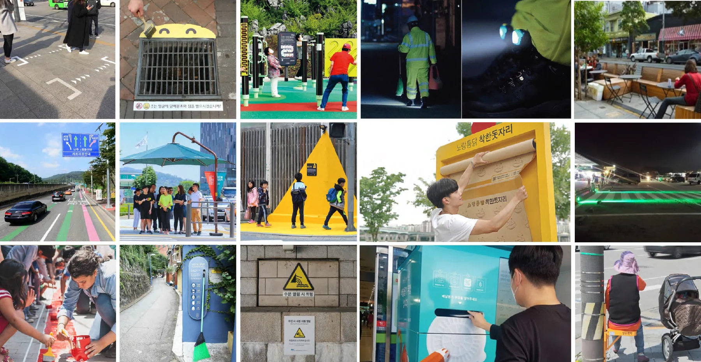
현재 한국의 중학교 교과서에는 공공디자인 우수 사례가 실려 있다. 선택 교과이기는 하지만, 아이들은 이 사례를 통해 "한국의 디자인이 이런 것이다"라고 배우고 있다.
옐로카펫(Yellow Carpet). 어린이 보호구역의 횡단보도 대기 공간을 노란색으로 칠한 이 디자인은 이제 전국 곳곳에서 볼 수 있다. 운전자에게 "여기 아이들이 서 있다"는 시각적 경고를 주는 동시에, 아이들에게는 "이 안에서 기다려라"는 행동 유도를 한다. 노란색 마케팅을 하는 이마트가 페인트를 후원하고 있기도 하다.
폭염방지 그늘막. 서초구에서 처음 시작한 이 시설은, 처음에는 무단 시설이었다. 도시계획 시설로 지정되지 않은 구조물을 도로 위에 설치한 것이기 때문이다. 그러나 행정안전부에서 이를 공식 시설로 인정해 주면서, 현재 법적으로 인증 가능한 유일한 사례가 되었다.
고속도로 세이프트레인(SafeTrain). 졸음운전 방지를 위해 도로 표면에 요철을 만들어 진동과 소음으로 운전자를 깨우는 디자인이다.
ABC마트의 라이트 슈즈. 신발 브랜드 ABC마트는 동대문구 환경미화원들의 야간 안전을 위해 신발에 LED 라이트를 부착한 특수 신발을 만들어 기증했다. 새벽 시간대 보이지 않는 환경미화원들의 교통사고를 예방하기 위한 사회공헌 활동이었다.
노란통닭의 착한 돗자리. 한강 주변에서 치킨을 즐기는 시민들이 3천~5천 원짜리 은박 돗자리를 한 번 쓰고 버리면서 발생하는 쓰레기 문제. 치킨 프랜차이즈 '노란통닭'은 크래프트지(재생 용지)로 만든 일회용 돗자리를 제작해, 한강에서 무료 배포하는 '착한 돗자리 운동'을 펼쳤다. 한 번 사용 후 재활용이 가능한 소재다.
장수의자. 어르신들이 산책 중 쉬어갈 수 있도록 골목 곳곳에 설치한 간이 의자. 이 역시 엄밀히 말하면 법적으로 허가받지 않은 시설이지만, 공익성이 충분하기에 존재가 용인되고 있다.
무단행위라는 아이러니
흥미로운 사실이 있다. 위에 열거한 사례 대부분은, 엄밀히 말하면 무단행위다. 도로 위에 페인트를 칠하거나, 시설물을 설치하거나, 공간을 점유하는 행위는 도시계획 시설로 지정되지 않는 이상 원칙적으로 허용되지 않는다. 폭염방지 그늘막만이 유일하게 사후적으로 법적 인정을 받았을 뿐, 나머지는 모두 공익성에 기대어 존재하고 있다.
이 아이러니가 말해주는 것이 있다. 현행 제도가 좋은 공공디자인의 출현을 충분히 뒷받침하지 못하고 있다는 점이다. 그리고 바로 이 지점에서 '실험'이라는 방법론이 필요해진다.
민간 사회공헌과 공공디자인의 만남
ABC마트의 라이트 슈즈나 노란통닭의 착한 돗자리는 공공 영역의 사업이 아니다. 이윤을 추구하는 민간 기업이 CSR(기업의 사회적 책임) 비용을 투자하여 도시 인프라를 사회에 돌려주는 방식이다.
주목할 만한 숫자가 있다. 한국 대기업의 연간 사회공헌 비용은 약 1조 7천억 원에 이른다. 이 거대한 금액의 일부라도 도시 공간 인프라에 투입된다면 어떨까? 기업에서 이윤의 일부를 도시 공공 인프라로 환원하는 매칭 모델은, 행정 예산만으로 100%를 감당해야 하는 현실에 대한 현실적인 대안이 될 수 있다.
공공디자인 실험실이 추구하는 방향 중 하나가 바로 이것이다. 민간의 사회공헌 비용과 공공의 행정 역량을 연결하여, 시민에게 실질적 이익이 돌아가는 '착한 디자인'을 실현하는 것.
제2부
실험의 방법론
어떻게 실험하는가
━━━━━━━━━━━━━━━━━━━━━━━━━━━━━━━━━━━━━━━━
제3장
공공디자인 실험실의 탄생
━━━━━━━━━━━━━━━━━━━━━━━━━━━━━━━━━━━━━━━━
강남구 공공디자인 진흥계획, 2018
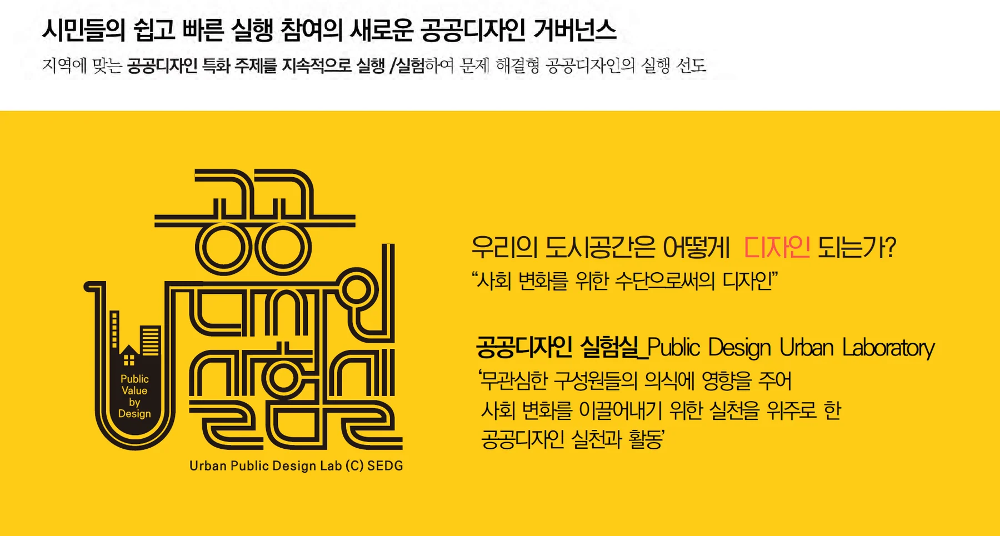
공공디자인 실험실의 씨앗은 2018년 강남구와의 작업에서 뿌려졌다. 하루 100만 명이 이동하는 국내 최대 유동 인구 지역. 이곳에서 디자인을 통해 구민들의 안전, 편의, 품격, 배려를 어떻게 실현할 것인가? 이 질문에 답하기 위한 공공디자인 진흥계획을 수립했다.
계획 수립 과정에서 발견한 것은, 도시 속 문제의 대부분이 매우 고질적이라는 사실이었다. 주체가 모호하고, 오랜 시간 방치되어 구조적 문제로 고착된 것들. 단순한 디자인 개발로는 해결이 어려웠다. 그래서 우리는 **"문제를 해결하는 과정 그 자체를 공공디자인 실험실로 운영한다"**는 방법론에 도달했다.
실험이 만드는 세 가지 가치
공공디자인 실험실이 추구하는 가치는 명확하다.
첫째, 인식의 전환이다. 실험 과정에서 가장 중요한 것은, 혼자 하지 않는 것이다. 행정 담당자, 시민, 민간 전문가가 함께 참여해야 한다. 짧으면 하루, 길면 한두 달. 이 기간 동안 함께하는 사람들이 "아, 이럴 수도 있구나", "이렇게도 바뀔 수 있네"를 직접 체험한다. 이 경험이 행정 혁신과 새로운 제도 도입의 씨앗이 된다.
둘째, 예산의 절감이다. 수억 원을 들여 본 시설을 만들기 전에, 수백만 원으로 임시 설치를 해보고 효과를 검증한다. 담배 부스 하나를 만들기 전에 500만~1,000만 원을 들여 테스트하면, 수천만 원짜리 실패를 예방할 수 있다.
셋째, 실증 데이터의 확보다. "이 디자인이 효과가 있다"는 주장은 주관적이다. 그러나 "이 디자인을 적용한 후 만족도가 94% 나왔다"는 사실은 객관적이다. 의회에서 예산을 확보할 때, 상급자를 설득할 때, 이 데이터가 가장 강력한 무기가 된다.
실험의 프로세스
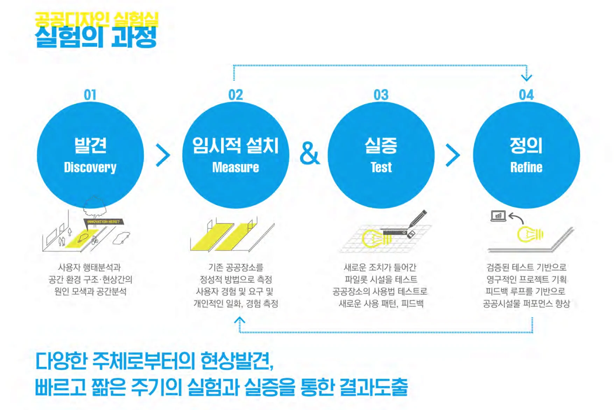
공공디자인 실험실의 일반적인 프로세스는 다음과 같다.
문제 발견: 현장에서 다양한 이해관계자의 이야기를 듣는다
분석과 기획: 문제의 구조를 파악하고 디자인 전략을 수립한다
임시 설치: 최소 비용으로 실험적 디자인을 현장에 적용한다
실증 평가: 사용자 만족도, 행태 변화, 과학적 측정 등을 통해 효과를 검증한다
공유와 확산: 결과를 공유하고, 효과가 검증된 디자인의 제도화를 추진한다
이 과정에서 핵심은 3번과 4번이다. '임시'라는 이름 아래 제도적 제약을 우회하면서, 과학적 방법으로 효과를 입증한다. 이것이 실험실의 전략이다.
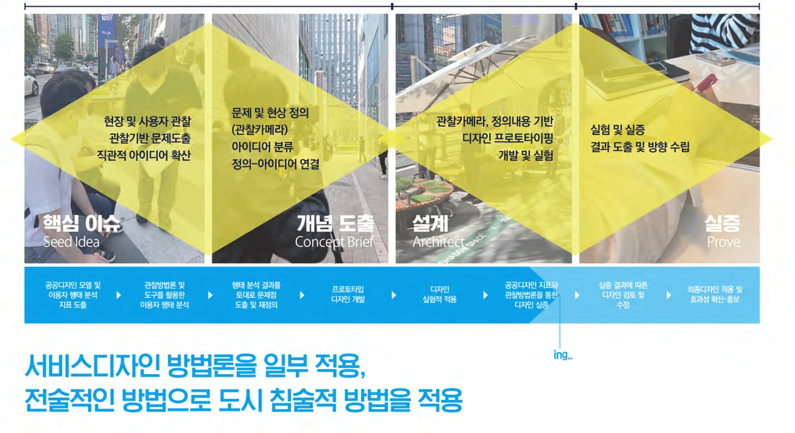
━━━━━━━━━━━━━━━━━━━━━━━━━━━━━━━━━━━━━━━━
제4장
실험의 언어: 디자인의 기본 원리
━━━━━━━━━━━━━━━━━━━━━━━━━━━━━━━━━━━━━━━━
공공디자인 실험실에서 반복적으로 활용하는 디자인 원리들이 있다. 이것들은 전문 디자이너만의 지식이 아니라, 공공행정을 하는 분들도 알아두면 실무에 바로 적용할 수 있는 실용적 도구다.
시인성(視認性): 보이는 것이 전부다
시인성이란 "얼마나 잘 보이는가"를 뜻한다. 아무리 좋은 정보도 보이지 않으면 소용없다.
마진 공간(여백)의 힘. 주변이 복잡할수록, 정보가 잘 보이려면 여백이 필요하다. 세계 최고의 간판 매뉴얼을 가진 곳이 어디인지 아는가? 스타벅스다. 스타벅스 간판을 유심히 관찰해보라. 로고와 글자 주변에 넉넉한 마진 공간을 확보하고 있다. 보통의 카페는 간판 안에 카푸치노, 라떼, 아메리카노… 온갖 정보를 넣으려 한다. 빈칸이 있으면 불안해서 무언가로 채우려 한다. 그러나 빈칸이 있어야 핵심 정보가 더 잘 보인다.
단색의 원칙. 한국의 간판에는 이상한 습관이 있다. "인천치과"라고 쓸 때 '인천'과 '치과'의 색깔을 다르게 쓴다. 이것은 가독성을 현저히 떨어뜨린다. 하나의 색깔로 통일해야 시인성이 높아진다.
명시성(明視性): 밝고 어두움의 차이
명시성은 밝기 대비(명도 대비)를 의미한다. 특히 고령자와 시각약자를 위한 디자인에서는 색채보다 명시성이 더 중요하다.
간단한 테스트 방법이 있다. 디자인 결과물을 흑백 복사해보라. 흑백으로 복사했을 때 정보가 명확히 구분되면, 그것은 고령자와 시각약자에게도 잘 보이는 디자인이다. 명도 차이가 불분명하면, 색을 아무리 예쁘게 써도 정보 전달에 실패한다.
안산시청의 실내 사인 디자인을 고명도 대비로 설계했을 때, 시장님이 "상갓집 같다"고 불만을 표했다. 그러나 안전 디자인의 관점에서는 그것이 정답이었다. 색을 함부로 쓰면 안전 정보의 전달력이 약해진다.
색채의 과학: 보색 충돌과 색파장
보색 충돌. 빨간색과 파란색처럼 색상환에서 반대편에 위치한 색(보색)을 함께 사용하면 색 충돌이 일어난다. 태극기의 태극 문양을 자세히 보면, 빨간색과 파란색이 만나는 경계에서 보라색의 색 산란이 관찰된다. 보색끼리는 무채색으로 분리해주어야 한다.
주황색의 비밀. 색에는 파장이 있다. 주황색은 장파장 색상으로, 같은 조건에서 가장 '튀어나와 보이는' 색이다. 빨강보다도 돌출감이 크다. 한국도로공사가 모든 도로 시설물에 주황색을 사용하는 이유가 여기에 있다. 위험을 알려야 하는 안전 표지에 주황색이 최적인 이유다.
세로와 가로: 중력이 만드는 심리
인간은 중력의 지배를 받는 존재다. 이 사실이 디자인에 직접적인 영향을 미친다.
세로 배열은 불안과 경각심을 준다. 무언가를 수직으로 세워놓으면 인간은 본능적으로 불안함을 느낀다. 구치소와 감옥의 창살이 모두 세로로 되어 있는 이유다. 밀폐감과 경계심을 유발한다.
가로 배열은 편안함과 안정감을 준다. 관광지의 난간이 모두 가로로 되어 있는 이유다. 수평선처럼, 땅과 평행한 선은 안정감을 준다.
이 원리를 안전 정보 디자인에 적용하면, 경고 정보는 세로로 배열하고, 안내 정보는 가로로 배열한다. 도시 공간의 난간은 가로를 쓰고, 교량 난간(추락 방지)은 세로를 쓰는 것이 이 원리에 부합한다.
정보의 골든존 배치
안전 정보 사인을 설계할 때, 높이에 따라 정보를 배치하는 원칙이 있다.
• 골든존(Golden Zone): 눈높이. 가장 중요한 정보를 배치한다
• 실버존(Silver Zone): 골든존 위. 멀리서 봐야 할 정보를 배치한다
• 브론즈존(Bronze Zone): 하단. 상대적으로 덜 중요한 보충 정보를 배치한다
산업안전보건법에서 정보의 중요도를 표시하는 도형도 정해져 있다. 동그라미는 '절대 금지', 삼각형은 '선택적 주의'다. 교통 표지판도 같은 원리를 따른다.
인지부하(Cognitive Load)의 관리
아이트래커(Eye Tracker)라는 장비가 있다. 안경형 장비를 쓰고 대상을 바라보면, 1초에 80개의 시선 포인트가 기록된다. 이 데이터를 분석하면, 사람이 실제로 어디를 보는지를 알 수 있다.
복잡한 안전 표지판 앞에서 아이트래킹을 하면, 시선이 장식 요소(테두리, 배경 무늬, 불필요한 텍스트)에 분산된다. 이것이 인지부하다. 정보가 많이 들어올수록, 정작 중요한 핵심 정보("귀마개를 착용하세요")의 인지력은 상대적으로 약해진다.
해결책은 단순하다. 정보량을 최소화하라. 장식을 없애고, 풀 컬러 그림 대신 단순한 사람 형상만 남기고, 기관명이나 부서명 같은 부차적 텍스트를 제거한다. 남는 것만이 진짜 전달되는 정보다.
제3부
실험의 현장
다섯 개의 이야기
━━━━━━━━━━━━━━━━━━━━━━━━━━━━━━━━━━━━━━━━
제5장
강남구 — 100만 유동 인구 속 도시 실험
━━━━━━━━━━━━━━━━━━━━━━━━━━━━━━━━━━━━━━━━
고질적 흡연 공간이 쾌적한 공동 공간이 되기까지
강남구의 첫 번째 실험은 2019년에 시작되었다. 하루 100만 명이 이동하는 이 도시에서 발생하는 사회 문제를, 단순한 디자인 개발이 아닌 참여와 실험의 과정으로 풀어보기로 했다.
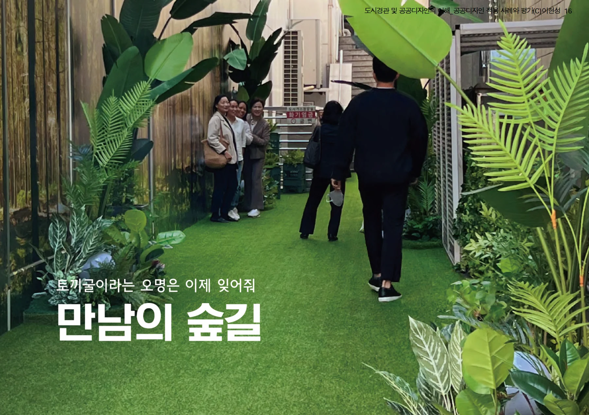
실험 기간 동안 벌어진 변화들은 극적이었다.
• 고질적인 흡연 공간이 → 모두를 위한 쾌적한 공동 공간으로
• 아무도 앉지 않던 뜨거운 벤치가 → 앉고 싶은 그림자 벤치로
• 아무 일도 일어나지 않던 넓은 유휴 공간이 → 도시 속 캠핑 공간으로
• 담배꽁초와 쓰레기로 오염되던 곳이 → 시민이 함께 가꾸는 공간으로
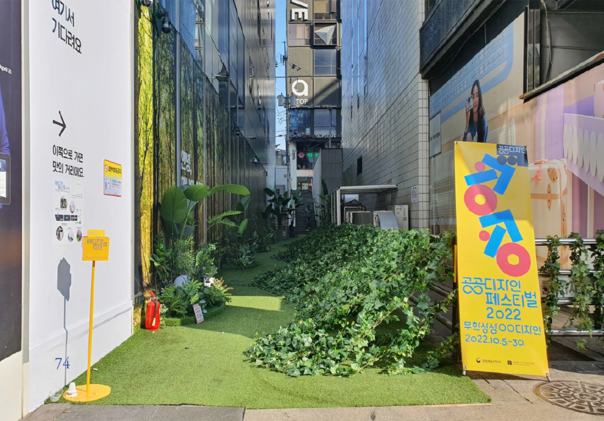
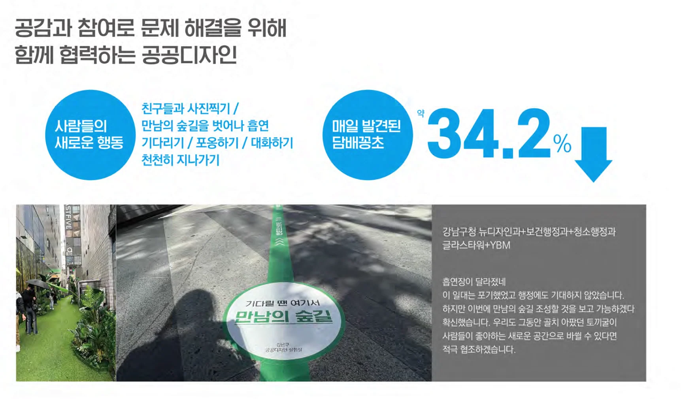
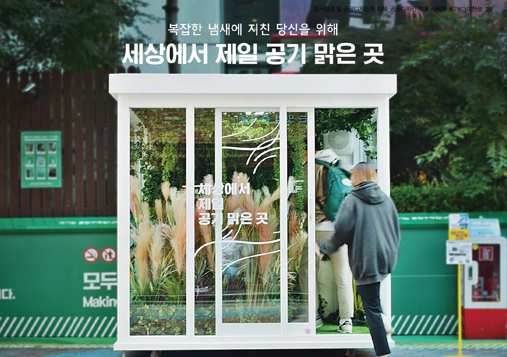
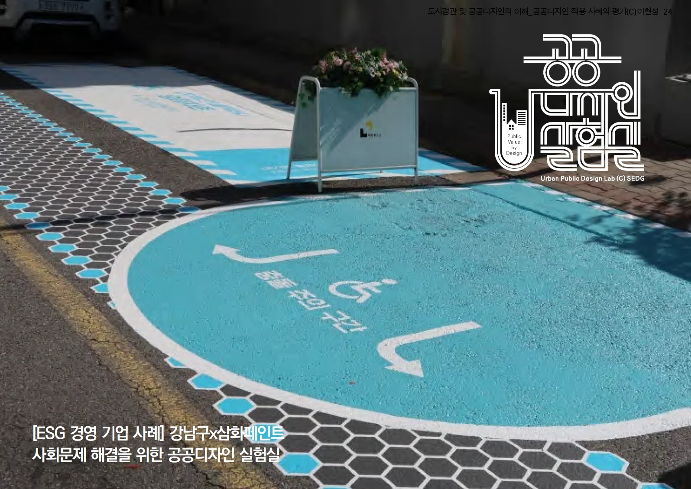
━━━━━━━━━━━━━━━━━━━━━━━━━━━━━━━━━━━━━━━━
제6장
서울 하천 — 시간으로 읽는 도시
━━━━━━━━━━━━━━━━━━━━━━━━━━━━━━━━━━━━━━━━
거리 대신 시간을 알려주다
누군가에게 길을 물어본 적이 있는가? "여기서 인천역까지 얼마나 걸려요?" "한 5분이요." 이것이 일상적인 대화다. "여기서 700미터예요"라고 답하는 사람은 거의 없다.
도시 공간에서 일상의 사람들은 거리를 시간 단위로 인식한다. 1,500미터가 어디인지 감이 오지 않지만, "걸어서 20분"은 바로 감이 온다.
그러나 도시의 안내 표지판에는 여전히 "홍지문까지 6km"와 같은 거리 정보만 표기되어 있다. 이것은 보행자에게 실질적인 도움이 되지 않는다.
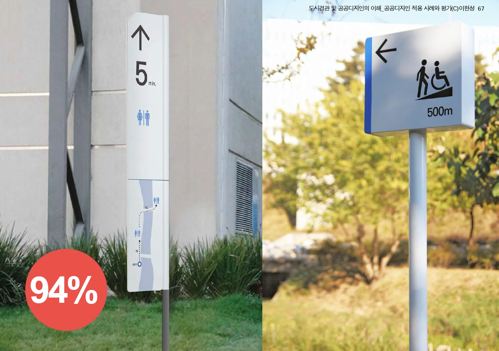
서울 하천변 보행 안내 시스템을 재설계하면서, 우리는 거리 표기를 시간 표기로 전환하는 실험을 했다. "화장실 도보 5분(450m)", "우천 시 대피소 계단 5분, 휠체어 2분." 현장 실험 결과, 시간 표기에 대한 주민 만족도는 압도적으로 높았다.`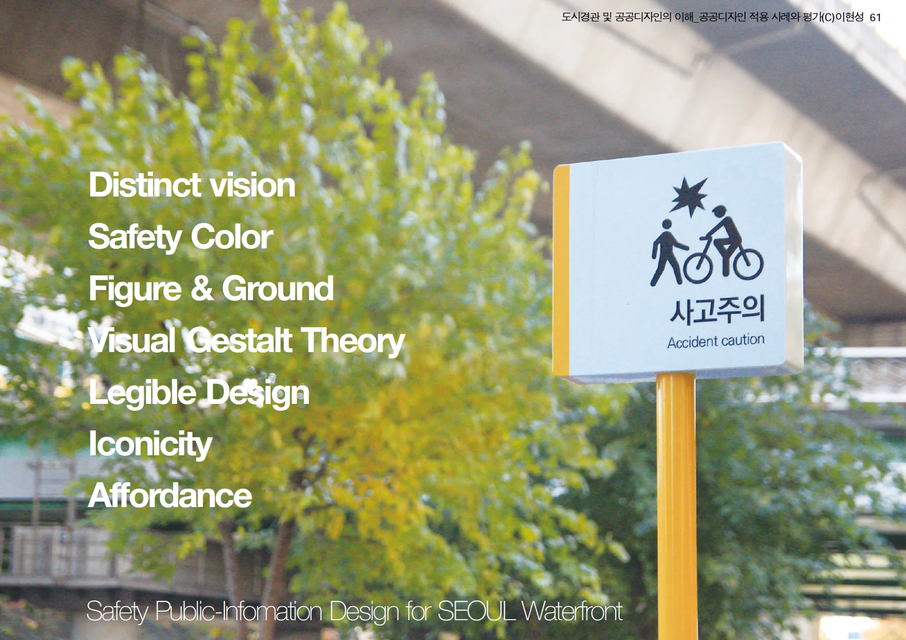
내비게이터 기능의 도입
기존의 지도형 안내판은 '지도(Map)' 기능에 머물러 있었다. 여기에 뭐가 있는지를 보여줄 뿐이다. 우리는 여기에 '내비게이터(Navigator)' 기능을 추가했다. 자동차 내비게이션처럼, 현재 위치에서 목적지까지의 이동 경로를 단계별로 안내하는 것이다. "직진 후 우회전, 화장실 도착."
주민 사용률 현장 실험에서 만족도 **94%**를 기록했다. 이 디자인은 현재 홍제천, 불광천 등에 시범 설치되어 있으며, 서울시에서 매년 확장 설치를 진행하고 있다.
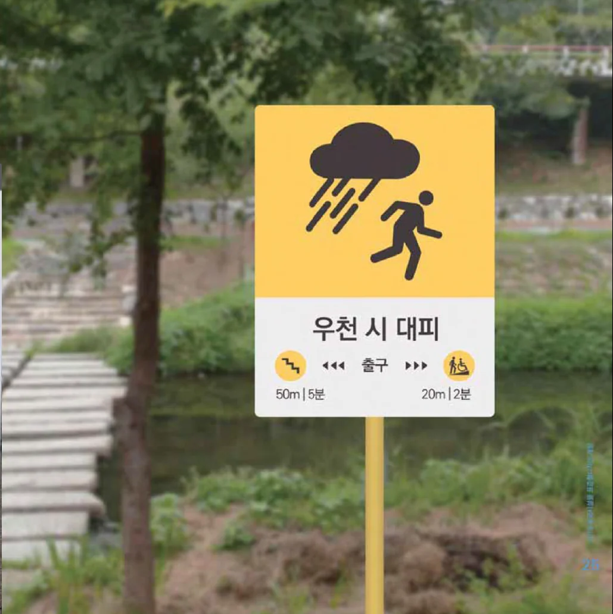
━━━━━━━━━━━━━━━━━━━━━━━━━━━━━━━━━━━━━━━━
제7장
원자력발전소 — 1급 보안시설의 안전디자인
━━━━━━━━━━━━━━━━━━━━━━━━━━━━━━━━━━━━━━━━
국가 안보시설에 공공디자인을 입히다
원자력발전소는 청와대와 함께 국가 1급 보안시설이다. 들어갈 때 USB를 비롯한 전자기기를 모두 제출해야 하고, 사진 촬영도 금지된다. 이러한 최고 보안 시설에 공공디자인이 적용된 것은 한국 최초의 사례다.
원자력발전소에서 발생하는 사고의 대부분은 '아차사고'다. 원자로가 무너지는 대형 사고가 아니라, 근로자가 넘어지거나 부딪히거나 피로로 인해 발생하는 일상적 사고들. 1,500명의 근로자가 매일 고위험 환경에서 일한다.
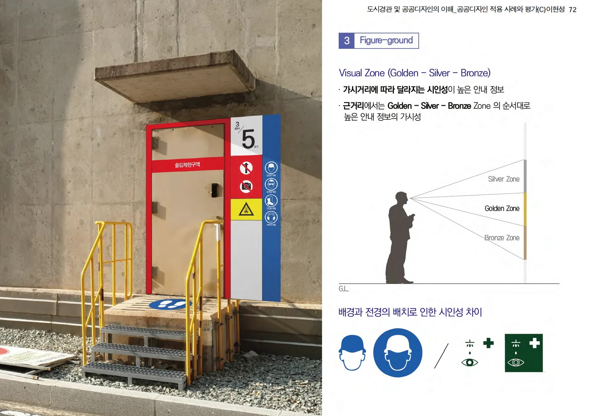
넛지(Nudge)의 적용
넛지(Nudge)란 '팔꿈치로 슬쩍 찌르다'라는 뜻이다. 직접적인 명령이 아니라, 간접적으로 바람직한 행동을 유도하는 기법을 말한다.
하천 실험에서 적용한 넛지의 사례가 있다. 하천에 사람들이 자꾸 물에 들어간다. 미끄러져 넘어지는 사고가 빈발한다. 기존 방식은 이랬다. "들어가면 벌금 5만 원." 효과는 미미했다. 이것을 다음과 같이 바꾸었다.
"생각보다 물은 차갑습니다."
"생각보다 물은 피부에 안 좋습니다."
이렇게 적어놓자, 사람들이 물에 들어가지 않았다. 벌금이라는 위협은 반발심을 유발하지만, 부드러운 정보 제공은 자발적 판단을 유도한다. 이것이 넛지다.
원자력발전소에도 같은 원리를 적용했다. 귀마개 착용을 유도하기 위해 "귀마개를 착용하세요"라고 명령하는 대신, 레퍼런스 데이터를 활용했다.
"청각장애의 70%는 산업 현장에서 발생합니다."
이 한 문장이 명령보다 훨씬 강력하게 귀마개 착용을 유도했다.
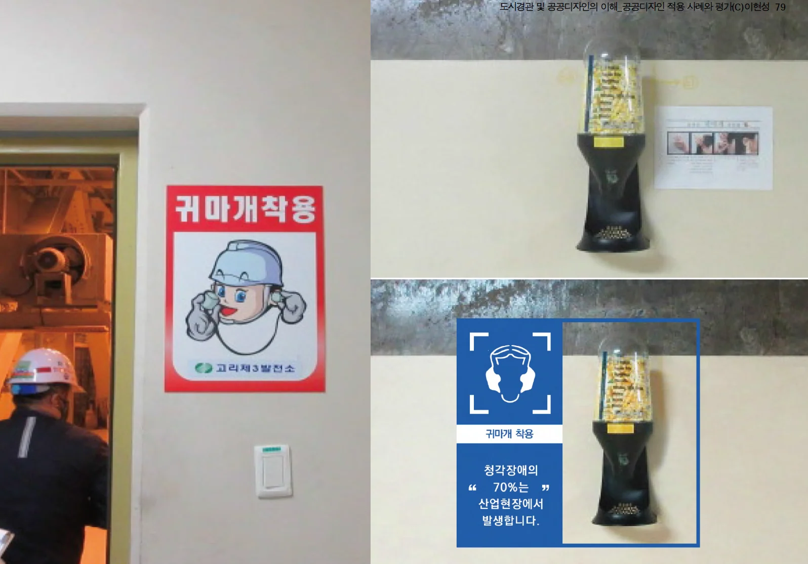
정보 디자인의 혁신
원자력발전소 내부의 기존 안전 표지판은 문제투성이였다.
• 정보량이 과다했다 (기관명, 장식 요소, 풀 컬러 그림 등)
• 배경과 전경의 명도 대비가 불분명했다
• 정보의 우선순위 없이 평면적으로 배열되어 있었다
개선 방향은 다음과 같았다.
패턴의 통일. 사람을 나타내는 아이콘을 하나의 디자인으로 통일하고, 360도 회전만으로 "걸어가는 사람", "떨어지는 사람", "부딪히는 사람"을 표현했다. 하나의 패턴이기 때문에, 근로자들은 의식하지 못하지만 "사람"이라는 정보를 즉시 인식하게 된다.
세로 배열. 모든 안전 정보를 세로로 배열했다. 가로보다 세로가 경각심을 유발하기 때문이다.
골든존 배치. 원자로 입구의 안전 정보를 골든존-실버존-브론즈존으로 재배치하고, 가장 위험한 정보(동그라미 표지)를 눈높이에 놓았다.
발자국 넛지. 위험 구역 입구 바닥에 발자국을 그려, 아무 말 없이도 자연스럽게 멈춰 서서 안전 정보를 확인하게 만들었다.
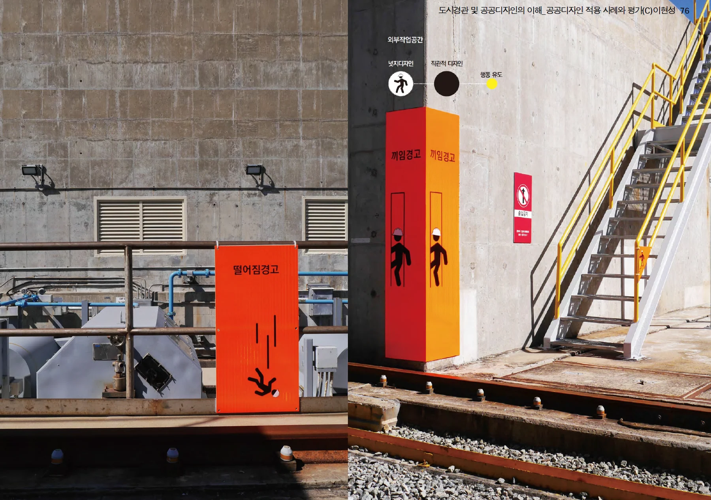
소화기 인지 디자인. 소화기 설치 위치를 멀리서도 인지할 수 있도록, 기둥 상단에 돌출형 표지를 설치했다. 이 디자인은 서울 지하철에도 적용되어, 길을 잃는 승객의 수를 크게 줄이는 데 기여했다.검증 결과
근로자 1,500명 대상 전수조사와 81명 대상 현장 실증 조사를 실시했다.
• 시인성 개선: "잘 보이고 좋다" 88%
• 전체 개선 효과: 약 90% 관찰
무엇보다 의미 있었던 것은 발전소 관계자들의 인식 변화였다. 디자인 전문가가 아닌 이들이 "디자인이 이렇게 하는 거구나"를 체감했고, "원자력발전소를 수출할 때 이런 디자인을 함께 적용해야겠다"는 아이디어로 이어졌다. 디자인의 확장성이 확인된 순간이었다.
━━━━━━━━━━━━━━━━━━━━━━━━━━━━━━━━━━━━━━━━
제8장
부천 — 공장 근로자를 위한 멘탈케어 디자인
━━━━━━━━━━━━━━━━━━━━━━━━━━━━━━━━━━━━━━━━
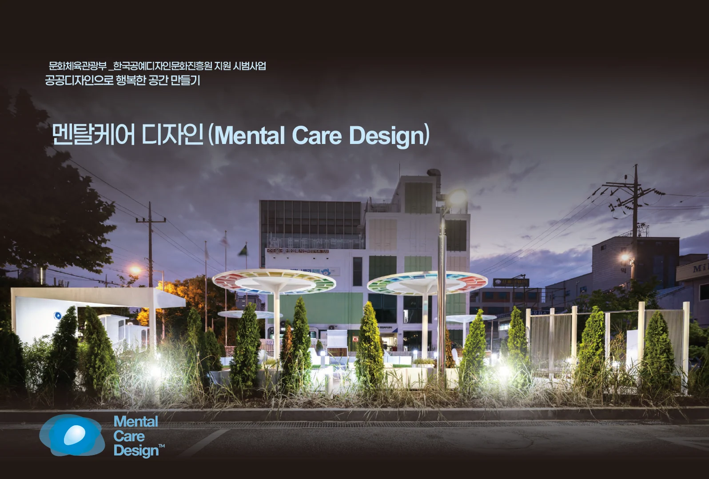
스트레스를 줄이는 공원을 디자인하다
부천시에는 소규모 공장이 밀집한 지역이 있다. 전화 한 통 받을 공간도 없이 빼곡히 들어선 미니 공장들. 이곳 근로자들은 일과 중 스트레스를 풀 곳이 어디에도 없었다.
문화체육관광부와 부천시의 시범사업으로, 우리는 하나의 질문을 던졌다. "디자인으로 사람들의 정서적 회복을 도울 수 있을까?"
이 프로젝트의 출발점은 독특했다. 디자이너가 아니라, 임상 의학자와 먼저 만났다. 의사와 미술치료사로부터 배운 사실들은 놀라웠다.
• 그림자의 색이 청색일 때와 흰색일 때, 그 아래 앉은 사람의 호르몬 변화가 다르다
• 440Hz의 음악을 들었을 때와 변박 음악을 들었을 때, 인체 내부의 변화가 측정된다
• 온도, 소리, 글자, 향기 — 모두가 인체에 영향을 미친다
우리는 이것을 모르고 산다. 그래서 원인을 모른 채 스트레스를 받기도 한다. 이 원리를 역으로 활용하면, 스트레스를 줄이는 환경을 디자인할 수 있다.
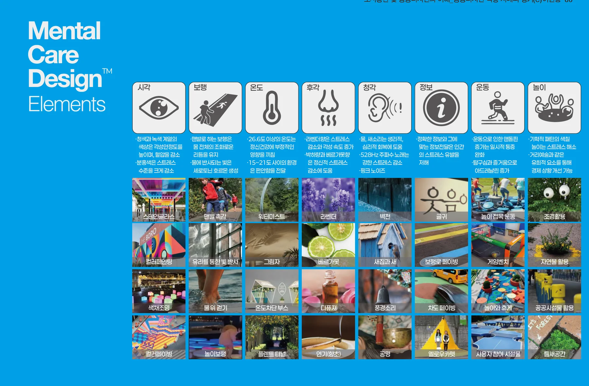
멘탈케어 시설의 설계 원리
시설물의 디자인은 극도로 단순하게 했다. 사각형, 삼각형, 동그라미. 플라토닉 솔리드(Platonic Solid)라 불리는 원형의 형태를 기본으로, 사용자에게 조형적 단순함을 제공했다.
• 재료: 피부가 닿는 모든 부분은 나무로 제작
• 구조: 조립식으로 설계하여 근로자들이 직접 이동 가능
• 조명: 미적 장식이 아닌, 그림자의 색채 효과를 위한 기능적 조명
• 공간 구분: 전화받는 곳, 음악 듣는 곳, 신체 활동 공간을 행태별로 분리
• 상호작용 요소: 탄력성 있는 고무줄에 몸을 기대면 팅팅 튀기는 '어른 놀이터' 시설
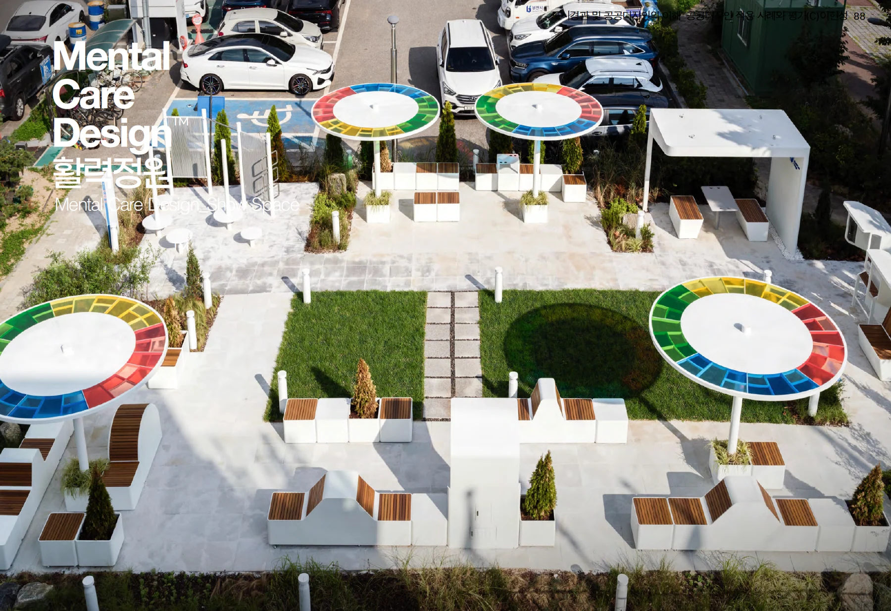
과학적 검증: 세 가지 방법
이 실험의 특별함은 검증의 엄밀성에 있었다. 세 가지 과학적 방법을 동시에 적용했다.
1. WHO 삶의 질도(WHOQOL-BREF) 설문. 근로자들의 주관적 삶의 질 변화를 전후 비교했다.
2. 미술치료 그림 분석. 근로자들에게 시설 사용 전후로 "비 오는 날 자신의 모습"을 그리게 했다. 사용 전 그림에서는 작고 위축된 인물이, 사용 후 그림에서는 크고 활동적인 인물로 변화했다. 국제 인증을 받은 미술치료사(한국에 단 두 명)가 분석을 담당했고, 전수조사 결과 "유의미한 영향이 확인된다"는 결론을 내렸다.
3. 침 검사(코르티졸 측정). 타액에 포함된 스트레스 호르몬 코르티졸의 변화를 측정했다. 본인이 아무리 "스트레스 안 받았다"고 부정해도, 호르몬은 거짓말을 하지 않는다. 비교 대조군을 설정하여, 일반 공원에서 휴식한 그룹과 멘탈케어 시설을 이용한 그룹을 비교했다.
놀라운 결과
• 스트레스 대처 전략: 31% 증가
• 활력성 증가: 참여자의 86%에서 관찰
• 만족도: 100명 대상, 98% 만족
"거짓말 같다"는 반응이 나올 정도의 수치였지만, 과학적 검증을 거친 결과였다. 이 프로젝트는 MBN 뉴스에도 보도되었다.
이 사업은 문화체육관광부에서 5억 원을 지원한 국가보조금 사업이었다. 부천시가 기획안을 응모하여 시범사업에 당선된 것이다. 지자체에서 관심이 있다면, 이러한 보조금 사업을 활용하는 것도 좋은 방법이다.
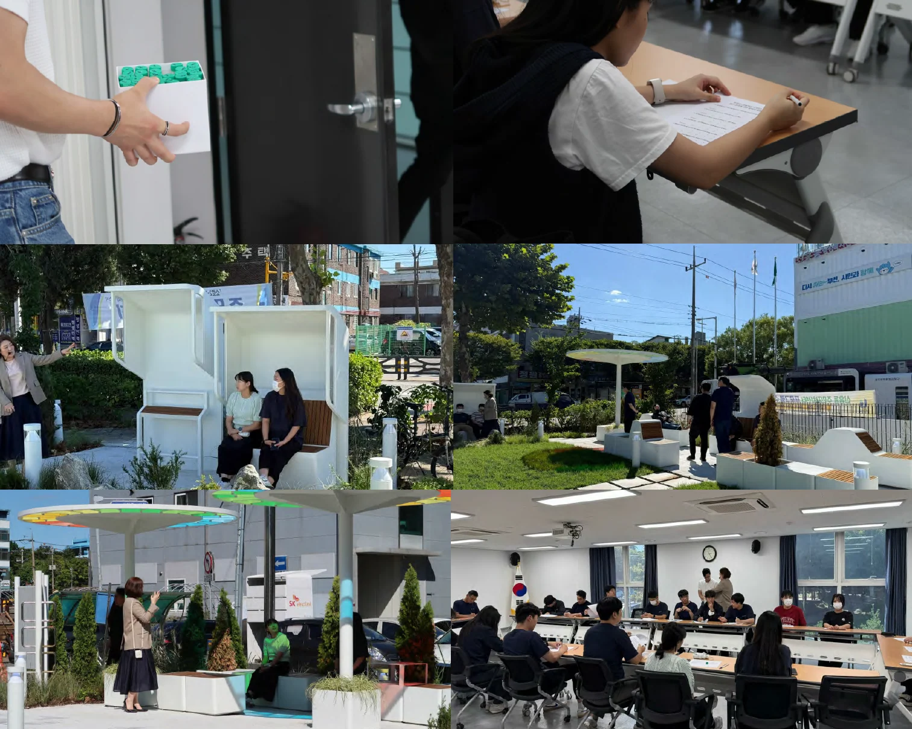
벤치 하나의 힘
우리가 일상적으로 생각하는 공원 시설 — 벤치 하나, 파고라 하나 — 를 카탈로그에서 골라 등록하면 그만이라고 여긴다. 기능적 관점이다. 그러나 이 실험이 증명한 것은, 조그마한 시설 하나가 사람의 행복 지수를 실질적으로 끌어올릴 수 있다는 사실이다. 과학적 근거를 갖춘 디자인은 '예쁜 시설'이 아니라 '치유하는 시설'이 된다.
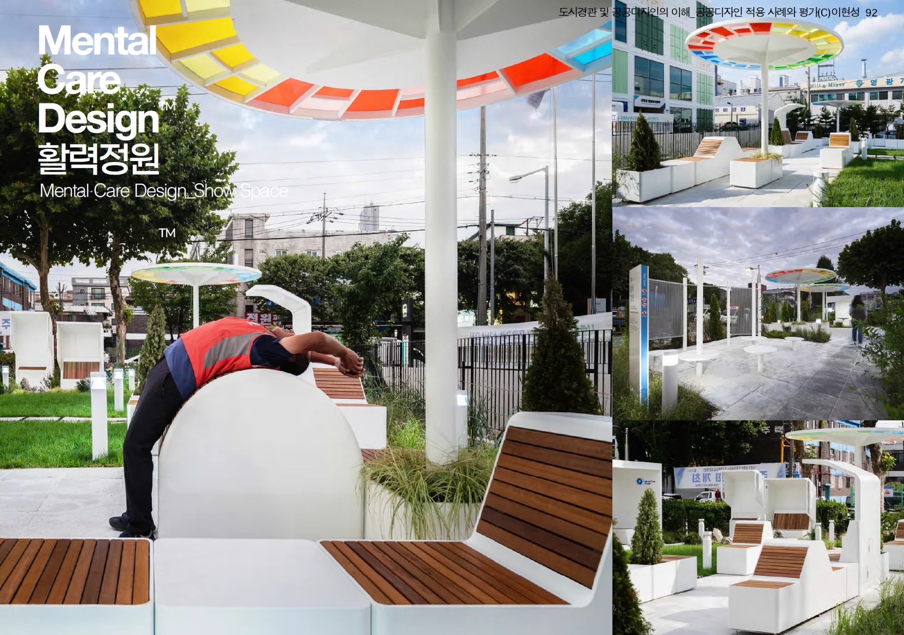
━━━━━━━━━━━━━━━━━━━━━━━━━━━━━━━━━━━━━━━━
제9장
사회갈등 예방 디자인 — 흡연 부스의 재발명
━━━━━━━━━━━━━━━━━━━━━━━━━━━━━━━━━━━━━━━━
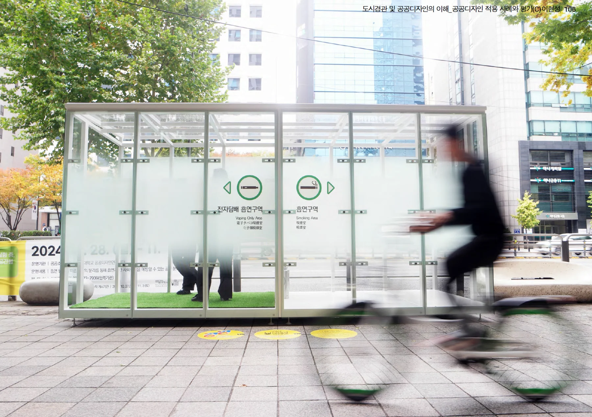
갈등의 시대, 디자인의 역할
한국 사회는 점점 고도화되고 있다. 개인의 가치가 중요해지고, 서로를 존중해야 하는 상황이 늘면서, 갈등도 필연적으로 증가한다.
• 전자담배 흡연자 vs. 궐련 담배 흡연자 vs. 비흡연자
• 반려견 동반자 vs. 비반려인
• 퍼스널 모빌리티(전동킥보드 등) 이용자 vs. 보행자
• 고령자 vs. 젊은 세대
• 젠더 이슈
행정에서는 이것을 '민원'이라 부른다. 공공디자인 실험실에서는 이것을 **'사회갈등 예방 디자인'**이라는 시리즈로 접근하기 시작했다.
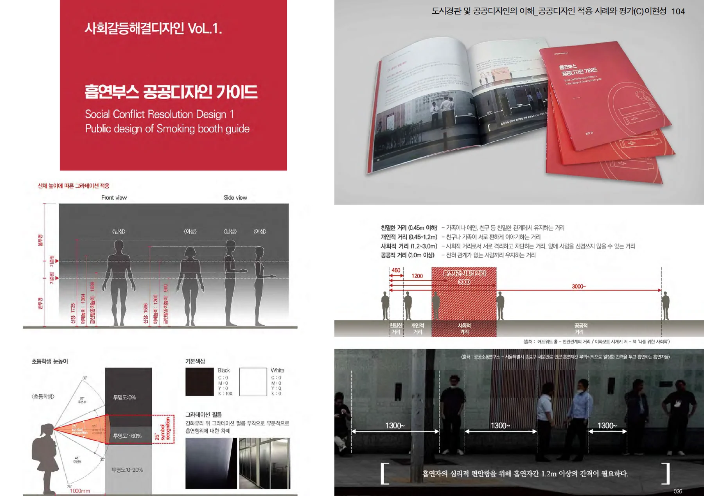
흡연 부스 — 1호 실험
그 첫 번째가 흡연 부스의 리디자인이다. 많은 지자체와 논의해 보았지만, 흡연 부스 디자인은 행정에서 가장 꺼리는 주제 중 하나였다. "금연은 괜찮지만, 흡연 공간을 만드는 건 부담스럽다." 흡연을 장려하는 것처럼 보일 수 있기 때문이다.
그래서 이 프로젝트는 민간 차원에서 진행했다. 광운대학교 이종혁 교수(서울 지하철 핑크색 임산부 의자를 디자인한 분)와 협업하여 매뉴얼을 개발하고, 자체 예산으로 제작하여 전국에 무료 배포했다.
그라데이션의 과학
흡연 부스 디자인의 핵심은 그라데이션이었다.
남녀의 평균 신장과 흡연 시 행태를 분석했다. 담배를 피우는 사람의 손 위치, 상체의 움직임. 그리고 초등학생의 평균 키를 대입했다.
결과물은 이렇다. 부스의 중간 높이에 불투명 그라데이션을 적용하여, 초등학생 눈높이에서는 부스 안의 흡연 장면이 보이지 않게 했다. 동시에 안전을 위해 하부와 상부는 개방하여 발과 머리가 보이도록 했다.
바닥 디자인의 넛지
흡연 부스 바닥에 잔디 느낌의 소프트 페이빙을 깔았더니, 예상치 못한 효과가 나타났다. 궐련 담배 흡연자들이 그 구역에 들어가지 않는 것이다. 불이 붙은 담뱃재가 떨어지면 잔디가 탈 수 있다는 무의식적 판단 때문이었다. 궐련 담배 흡연자들은 은연중에 하드 페이빙(단단한 바닥) 쪽으로 이동했다.
별도의 표지판이나 안내 없이, 바닥 재질만으로 궐련 담배와 전자담배 흡연자의 자연스러운 분리가 이루어진 것이다. 이것이 넛지의 힘이다.
한시적 실험의 딜레마
이 흡연 부스는 공공디자인 페스티벌 기간에 시범 설치되었고, EBS 지식채널ⓔ에서도 촬영·방영되었다. 그러나 페스티벌이 끝나자 철거해야 했다. 임시 시설이기 때문이다.
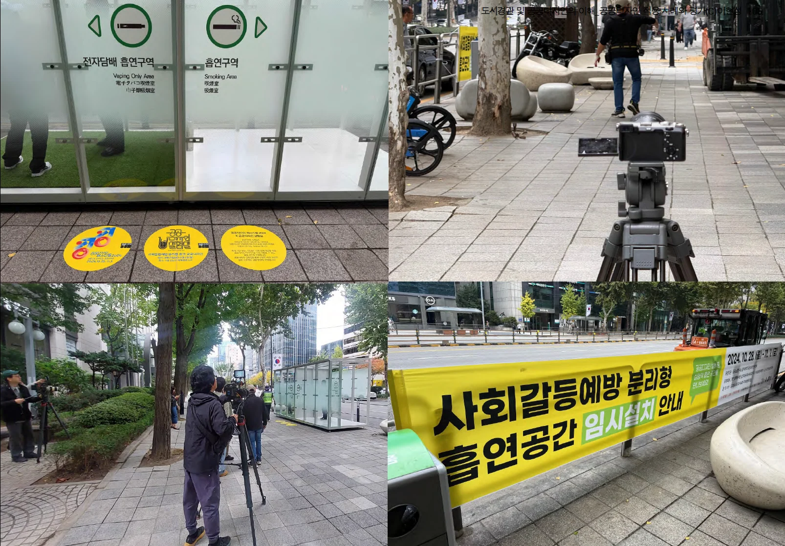
여기서 제도적 과제가 드러난다. 공익적 목적의 임시 시설에 대해, 실증 평가 기간을 충분히 확보할 수 있는 제도적 장치가 필요하다. 조례 차원에서 "공익성이 입증되고 실증 평가가 가능한 시설은 연구 설치 기간을 연장할 수 있다"는 규정이 마련된다면, 실험실의 성과를 정책으로 연결하는 다리가 놓일 것이다.제4부
실험 너머
공공디자인의 미래
━━━━━━━━━━━━━━━━━━━━━━━━━━━━━━━━━━━━━━━━
제10장
디자인의 확장성
━━━━━━━━━━━━━━━━━━━━━━━━━━━━━━━━━━━━━━━━
예쁘게 만드는 시대는 지났다
AI가 발전하고 기술이 평준화되는 시대가 오고 있다. 누구나 예쁘게 만들 수 있는 시대에, 디자인의 가치는 어디에 있는가?
**"이 디자인이 얼마나 필요한가"**를 증명하는 데 있다.
시민에게 필요하다는 것을, 행정관이나 전문가가 "필요합니다"라고 말해서는 설득이 되지 않는다. 실증을 통해 효과성을 검증하고, 숫자로 보여줄 때 비로소 예산이 확보되고 정책이 만들어진다. 의회에 가서 예산을 요청할 때, 국장님이나 시장님을 설득할 때, "만족도 94%", "스트레스 31% 감소", "개선 효과 90%"라는 데이터가 가장 강력한 무기가 된다.
전문가의 영역에서 모두의 도구로
디자인이 전문가의 특정 영역이라는 인식은 바뀌어야 한다. 공공행정을 하는 분들에게도 디자인은 유용한 도구가 될 수 있다. 간판을 만들고 색깔을 칠하는 것만이 디자인이 아니다. 어떤 정책에서 풀어야 할 문제가 있을 때, 그것을 풀어낼 수 있는 전략이자 수단으로서 디자인을 활용할 수 있다.
카카오임팩트, SK, 한국도로공사를 비롯한 민간 기업과 공공 기관들이 이미 이러한 방식으로 디자인을 활용하고 있다. 시민 참여형 거버넌스에서 디자인이라는 수단이 효율적으로 사용되는 사례가 늘고 있다.
지역 브랜드와 공공디자인
공공디자인 실험의 성과를 외부에 노출하는 것은 지역 브랜드 향상에도 기여한다. "우리 인천에서 이런 실험을 했다"는 것 자체가 지역의 혁신성과 선진성을 보여주는 시그널이 된다.
한국의 공공디자인 법체계는 세계 최초다. 해외 학회에서 발표하면 청중이 놀라는 수준이다. 이 K-디자인 모델을 각 지자체가 자신만의 실험으로 채워나간다면, 그것은 곧 세계에 내놓을 수 있는 한국형 공공디자인의 경쟁력이 된다.
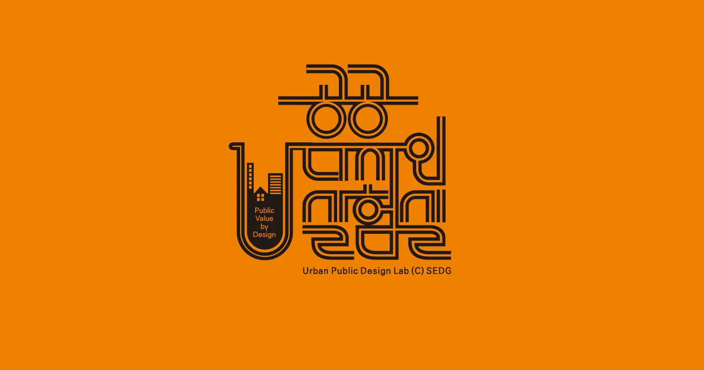
━━━━━━━━━━━━━━━━━━━━━━━━━━━━━━━━━━━━━━━━
제11장
행정에 드리는 제안
━━━━━━━━━━━━━━━━━━━━━━━━━━━━━━━━━━━━━━━━
제도적 제안
1. 공익적 임시 시설의 연구 설치 조례 마련. 공익성이 인정되고 실증 평가가 가능한 임시 시설에 대해, 연구 설치 기간을 충분히 확보할 수 있는 조례가 필요하다. 현행 제도에서는 좋은 공공디자인 실험이 "무단 시설"로 분류될 수밖에 없다.
2. 민간 사회공헌 비용과의 매칭 모델 구축. 연간 약 2조 원에 달하는 대기업 사회공헌 비용의 일부를 도시 공간 인프라로 환원하는 체계적인 매칭 모델을 구축해야 한다. 행정 예산 100%에 의존하는 것이 아니라, 민간의 자원을 효과적으로 연결하는 협력 모델이다.
3. 국가보조금 시범사업의 적극 활용. 문화체육관광부 등 중앙부처의 공공디자인 시범사업 보조금을 적극 활용하라. 부천시의 멘탈케어 디자인 사례처럼, 기획안을 응모하여 국가 지원을 받는 것은 지자체의 재정 부담을 크게 줄이는 방법이다.
실무적 제안
4. 작게 시작하라. 수십억 원의 대형 프로젝트가 아니라, 수백만 원의 소규모 실험부터 시작하라. 실패해도 배울 수 있고, 성공하면 데이터가 된다.
5. 함께 하라. 디자인 전문가에게 맡기고 결과물만 받는 방식이 아니라, 행정 담당자가 실험의 전 과정에 참여하라. 과정에서의 인식 변화가, 결과물보다 더 큰 가치를 만든다.
6. 측정하라. 실험의 효과를 반드시 측정하라. 만족도 조사, 행태 관찰, 가능하다면 과학적 측정까지. 이 데이터가 다음 실험의 근거이자, 제도화의 발판이 된다.
━━━━━━━━━━━━━━━━━━━━━━━━━━━━━━━━━━━━━━━━
에필로그
착한 디자인의 실현
━━━━━━━━━━━━━━━━━━━━━━━━━━━━━━━━━━━━━━━━
공공디자인 실험실이 궁극적으로 추구하는 것은 단순하다.
공공 영역의 문제를 해결하여, 시민과 국민에게 실질적 이익이 돌아가는 착한 디자인을 실현하는 것.
디자인이 전문가의 독점적 영역이 아니라 행정의 전략적 도구가 되고, 민간의 사회공헌이 도시 인프라로 환원되며, 작은 실험들이 모여 제도적 혁신을 만들어내는 세상.
그것이 이 실험실이 꿈꾸는 미래다.
이 책에 담긴 다섯 개의 실험 — 강남의 도시 공간 실험, 하천의 정보 디자인 실험, 원자력발전소의 안전 디자인 실험, 부천의 멘탈케어 실험, 흡연 부스의 사회갈등 예방 실험 — 은 모두 하나의 공통점을 가지고 있다. 임시적이었지만 효과는 영구적이었다는 것. 시설은 철거되었지만 인식은 바뀌었다는 것. 실험은 끝났지만 제도적 논의는 시작되었다는 것.
벤치 하나, 표지판 하나, 바닥 재질 하나. 이 작은 것들이 사람의 행동을 바꾸고, 스트레스를 줄이고, 안전을 높이고, 갈등을 예방한다. 그리고 그 작은 변화들이 모여, 도시를 바꾼다.
공공디자인 실험실의 문은 항상 열려 있다. 다음 실험의 주인공은, 이 책을 읽고 있는 바로 당신일 수 있다.
━━━━━━━━━━━━━━━━━━━━━━━━━━━━━━━━━━━━━━━━
부록
참고 자료
━━━━━━━━━━━━━━━━━━━━━━━━━━━━━━━━━━━━━━━━
공공디자인 실험실 프로젝트 연혁
| 연도 | 프로젝트 | 협력 기관 | 주요 성과 |
|---|---|---|---|
| 2018 | 강남구 공공디자인 진흥계획 수립 | 강남구청 | 공공디자인 실험실 개념 탄생 |
| 2019 | 강남구 공공디자인 실험실 1차 | 강남구청 | 도시 공간 실험 4건 수행 |
| - | 서울 하천 보행 안내 시스템 | 서울시 | 만족도 94% 시범 설치 |
| - | 원자력발전소 안전디자인 | 한국수력원자력 | 1급 보안시설 최초 적용 개선 효과 90% |
| - | 부천 멘탈케어 디자인 | 문화체육관광부 부천시 | 만족도 98% 스트레스 대처력 31%↑ |
| - | 사회갈등 예방 흡연 부스 | 광운대, 민간 | 매뉴얼 전국 무료 배포 EBS 방영 |
| - | 인천 도시철도 2호선 안전정보 디자인 | 인천교통공사 | 안전정보 시스템 설계·설치 |
| - | 안산시청 실내 사인 디자인 | 안산시청 | 고명도 대비 유니버설 디자인 적용 |
| - | 서울 지하철 스트레스 프리 디자인 | 서울교통공사 | 길 잃는 승객 감소 |
공공디자인 관련 법령
• 산업디자인진흥법 (1977년 제정): 제품의 경제적 경쟁력 확보를 위한 디자인
• 공공디자인의 진흥에 관한 법률 (2016년 제정): 공공의 이익과 안전을 위한 디자인
- 제2조(정의): 공공디자인은 국민의 안전과 편의를 위하여 공공시설물 등을 개선하는 행위
- 4대 가치: 안전, 편의, 품격, 배려
디자인 용어 해설
| 용어 | 설명 |
|---|---|
| 시인성(視認性) | 대상이 얼마나 잘 보이는가의 정도 |
| 명시성(明視性) | 밝기 차이(명도 대비)에 의한 식별 가능성 |
| 넛지(Nudge) | 직접적 명령 없이 부드럽게 바람직한 행동을 유도하는 기법 |
| 인지부하(Cognitive Load) | 과도한 정보로 인해 핵심 정보의 인식이 저하되는 현상 |
| 골든존/실버존/브론즈존 | 시선 높이에 따른 정보 배치 우선순위 체계 |
| 색파장 | 색이 가진 빛의 파장. 장파장(주황)은 가장 돌출되어 보임 |
| 보색 충돌 | 색상환에서 반대편 색을 함께 사용할 때 발생하는 시각적 불안정 |
| 플라토닉 솔리드 | 정다면체. 가장 단순하고 원형적인 조형 형태 |
| CSR | 기업의 사회적 책임(Corporate Social Responsibility). 사회공헌 활동 |
| 아이트래커 | 사람의 시선 이동을 추적·기록하는 장비 |
━━━━━━━━━━━━━━━━━━━━━━━━━━━━━━
이 책은 홍익대학교 이현성 교수의
「도시경관 및 공공디자인 이해」 강의 내용을 바탕으로 집필되었습니다.
공공디자인 실험실은 공무원, 시민, 디자이너, 기업이
함께 만들어가는 열린 플랫폼입니다.